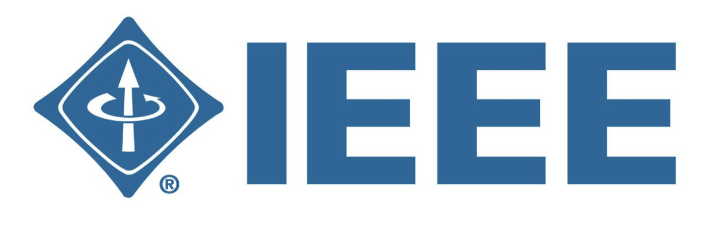
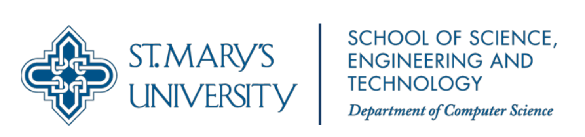

St. Mary’s University, as a Catholic Marianist University, fosters the formation of people in faith and educates leaders
for the common good through community, integrated liberal arts and professional education, and academic excellence.
Statements from our Students!
Joshua Do
Class of 2026
"I chose this university because of it's private setting and the few classmates for the eventual of close
bonds between students. As for what I like about the computer science department and university, I like how you can
ask the professors and they will be able to answer, always willing to help the students. The students themselves
are very friendly and not just a bunch of people isolated like in other universites, where you focus on one group
you find at the beginning of the year."
Emily Medlin
Class of 2025
"I chose to attend St. Mary’s because of the amount of opportunities they offered me such as their academic scholarships
and vast selection of computer science degree paths. Moreover, I really love the learning environment and small classroom
setting for each class. It gives me the chance to really make connections with my professors and get the most out of learning
all the concepts being taught."
Ayden Soliz
Class of 2024
"My choice to attend St. Mary's was driven by the small, yet comforting environment that was present. I knew that if I were to enroll,
my professors would have no issue rembering or connecting with me on a level that no public university could match. There is a
welcoming presence provided by the faculty and staff that I have endeared every day. I also find enjoyment in my classes and an
effort to promote collaboration and teamwork amongst my peers."
The Department of Computer Science at St. Mary's University offers degree programs with a special
focus on the software development process. The programs are intended for students, professionals and managers
who are interesting in advancing their career by gaining the knowledge and skills of the problems and
solutions of developing practical software systems.
In general, students will develop or deepen skills to analyze, design, implement, and test stand-alone
and embedded software systems.
Bachelor's of Science
A Bachelor's of Science degree in Computer Science is a program that usually involves
learning about the fundamentals of computer systems and operations before choosing to focus
on a more specific area such as cybersecurity, data science, or game design.
Bachelor's of Arts
A Bachelor's of Arts degree in Computer Science is a program designed to teach basic computer
science techniques and how to apply them to other subject areas such as business, biology,
psychology, and graphic design. This type of degree tends to be more theoretical.

Master of Science
A Master of Science in computer science is a graduate program
that offers the chance to develop more targeted skills and advanced specializations in the
computer science field. This kind of program aims to help students build a more agile knowledge
base and focus on advanced proficiences that support technical specializations, career growth, and advancement
into doctoral programs.
Community Engagement

Infinite Loops

Institute of Electrical and Electronic Engineers

Buffer Overflow

Society of Women in STEM

Ready, SET, Research